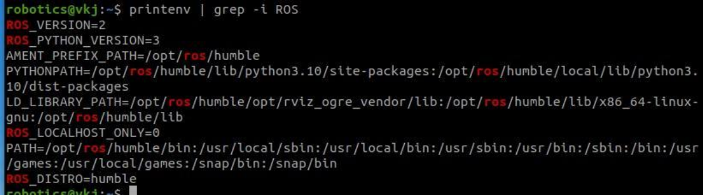

ROS (Robot Operating System) Course
Terminal Commands
Terminal/Shell/Bash
- A shell is a user interface that takes commands from the user and tells the operating system what to do.
- Bash is the default shell, or command language interpreter, for the GNU operating system.
- It runs scripts (multiple command) non-interactively as a program.
- The name is an acronym for the 'Bourne-Again SHell'.
- Bash incorporates useful features from the Korn shell ksh and the C shell csh.
- There is no "undo" in bash.
- Command is almost always entered in all lowercase characters.
.bashrc is a script that
is executed whenever a new terminal session is started in
interactive mode.
It is used to set environment variables, create aliases,
define functions, and configure other shell preferences.
Syntax of Shell Command
-
In general, a Shell command consists of the command
itself followed by arguments, separated by spaces :
command options(s) filename(s) -
The options modify the way the command works. A
hyphen followed by a single character, such as -a is a
common way to write option.
ls -a -
We use two hyphens followed by a word.
ls --help - The filename is the last argument for a lot of shell commands. It is simply the file or files that you want the command to work on.
- Not all commands work on files, such as ssh, which takes the name of a host as its argument.
python3 --versioninfo bashTerminal Commands
-
pwd : Print name of the "Present Working Directory"
pwd -
mkdir : Create a directory
mkdir test_folder -
ls : List of the directory
ls -
cd : Change directory to specified target
cd test_folder -
touch : Create an empty file
~/test_folder$ touch test_file_empty.txt -
nano : A pre-installed text editor.
~/test_folder$ nano test_file_text.txt -
ls -l : Long list with date, owner etc.
~/test_folder$ ls -l -
TAB : Tab Completion
~/test_folder $ cat (use tab) -
cat : Content of a file
~/test_folder$ cat test_file_text.txt -
~ : Root/Home directory.
~/test_folder$ cd ~ -
ls -a : List including hidden files.
~/test_folder$ ls -a- List includes files starting with a dot "."; means hidden file.
- These are created automatically are used for configuration purposes.
-
ls -al : Long list including hidden files.
~/test_folder$ ls -al~/test_folder$ ls -la -
man : Manual.
~$ man- To exit the man command, you have to hit the key q.
- To scroll through the pages, hit the DOWN or UP ARROW Keys.
- To scroll through the pages, hit the spacebar.
~$ man ls~$ man man~$ man bash
Skill Task
-
Make sure you are at Home directory
~$ -
Create a folder "child_folder" in side "test_folder"
~$ mkdir test_folder/child_folder -
Create "child_file_empty.txt" inside "child _folder"
~$ touch test_folder/child_folder/child_file_empty.txt -
Create "child_file_text.txt" inside "child _folder"
~$ touch test_folder/child_folder/child_file_text.txt -
Check the files are successfully created using "ls" command from Home directory
~$ ls test_folder/child_folder -
Add text in the file eg. "Content of the Child File". You can use gedit or nano.
~$ gedit test_folder/child_folder/child_file_text.txt -
Display the content of the file.
~$ cat test_folder/child_folder/child_file_text.txt
Copy (cp) Command
cp : Creates a copy of a file
~/test_folder/child_folder$ cp source_path target_path~/test_folder/child_folder$ cp child_file_text.txt child_file_text_copy.txt~/test_folder/child_folder$ cd ~Skill Task
Make sure you are in the "test_folder" directory
~/test_folder$Copy file "child_file_empty.txt" from folder "child_folder" to "child_file_empty_copy.txt" in the "test_folder"
~/test_folder$ cp child_folder/child_file_empty.txt child_file_empty_copy.txtCheck the files is successfully copied using "ls" command
~/test_folder$ lsMove (mv) and Remove (rm) Commands
mv : Moves a file from a source directory to target directory
$ mv source_path target_path- Move "child_file_empty_copy.txt" from the "test_folder" to "child_folder" folder.
- Check list of the "test_folder" and "child_folder".
rm : Removes a file from a source directory
$ rm file_path- Remove "child_file_empty_copy.txt" from the "child_folder".
- Check list of the "child_folder".
Change Mode : chmod
Permissions types:
- Read (r): Refers to a user's ability to read the contents of the file.
- Write (w): Refers to a user's ability to write or modify a file or directory.
- Execute (x): Refers to user's ability to execute a file or view the contents of a directory.
Permission level:
- User (u): Represented by first 3 characters.
- Group (g): Represented by middle 3 characters.
- Other (o): Represented by last 3 characters.
- All (a): All users
Generally, the owner of the file has read (r) and read (r) permissions, and the group and the rest of users have only read (r) permissions.
Syntax:
chmod groups_to_assign_the_permissions permissions_to_assign/remove file/folder_names$ chmod permission_level+permission_type file_name~ test_folder$ ls -lchmod a+w file_namechmod +x file_name$ chmod a+w test_file_text.txt~ test_folder$ ls -l$ chmod o-w test_file_text.txt~ test_folder$ ls -l$ chmod u-w test_file_text.txtRedirection Operators (> and >>)
redirect the output of a command to a file
The > and >> operators redirect the output of a command to a file.
The operator > overwrites the target file with the output of the preceding command, it does not ask for permission, it just goes and does it.
The operator >> appends to the target file with the output of the preceding command.
~$ ls test_folder/child_folder > file_list.txt~$ ls test_folder >> file_list.txtTerminal Commands
- cat : shows the contents of a file, all at once.
- more : shows the contents of a file, screen by screen.
- less : also shows the contents of a file, screen by screen.
- head : used to show so many lines form the top of a file.
- tail : used to show so many lines form the bottom of a file.
- ps : lists the processes running on the machine.
- kill : terminates a process.
- nice : runs a process with a lower priority.
- ps ax - Shows all processes running on computer kill <pid> - Kills program with process <pid>
command options(s) filename(s)- pwd : Present Working Directory
- mkdir : Create a directory
- ls : List of the directory
- ls -a : List including hidden files.
- ls -l : Long list with date, owner etc.
- cd : Change directory to specified target.
- cat : Content of a file.
- ~ : Root/Home directory.
- touch : Create an empty file.
- nano : A pre-installed text editor.
- cp : Creates a copy of a file.
- mv : Moves a file from source to target.
- rm : Remove a file from source.
- TAB : Tab Completion.
- man : Manual.
$ chmod permission_level+permission_type file_nameThe > and >> operators redirect the output of a command to a file
Command : pipe (|), grep, printenv, &&, ||
'|' or '|&' : A pipeline is a sequence of one or more commands separated by one of the control operators
The pipe can be used to link commands together to perform more complex tasks that would otherwise take multiple steps (and possibly writing information to disk).
Grep : Search for patterns in file(s)
Syntax:
grep [option] Patterns file_name~/test_folder$ grep -i ubuntu test_file_text.txtSyntax:
command1 | command2command1 && command2: command2 is executed if, and only if, command1 returns an exit status of zero (success)
command1 || command2: command2 is executed if, and only if, command1 returns a non-zero exit status
~/test_folder$ ls | grep testprintenv : Prints the values of the specified environment variable.
Syntax:
printenv [option] variable$ printenv ROS_DISTROCommand
sudo and apt
The sudo command in Linux and other Unix-like operating systems stands for "superuser do."
The apt command is a powerful command-line tool, which works with Ubuntu's Advanced Packaging Tool (APT).
Updates the local package index with the latest package information from the repositories.
$ sudo apt updateUpgrades all installed packages to the latest versions available in the updated package index.
$ sudo apt upgradeInstall packages:
$ sudo apt-get install packagename$ sudo apt install python3-pipRemove packages:
$ sudo apt-get remove packagenameCommands : version
$ python3 --version$ pip --versionCommand : alias
The alias allows the user to create new name for original commands as per user convenience.
$ alias new_command orignal_commandGenerally, aliasing is done in .bashrc file.
~$ gedit .bashrcAdd "alias python=python3", then save and exit
~$ pythonRestart the terminal to make alias available. Check?
Change "alias python=python3", then save and exit
~$ source ~/.bashrcsource is a built-in shell command that reads and executes the file content in the current shell.
Virtual Environment
$ sudo apt install python3-venv$ python3 -m venv test_venv$ source test_venv/bin/activate$ deactivate$ pip freezeQuoting
Escape Character (\): It preserves the literal value of the next character.
Single quotes (' '): preserves the literal value of each character.
Double quotes (" "): preserves the literal value of all characters.
Secure Shell (ssh)
- The ssh command is a way to securely connect to a remote computer.
- Formats for this command:
- ssh hostname
- ssh username@hostname
- ssh hostname -l username
- If you do not specify the username, it will assume that you want to connect with the same username that you have on this local computer.
- Since you have a single username for all computers on the OIT network, you don't need to explicitly enter a username.
- But you can give a username, and will need to if your local username is different that your GL username. This might be the case if you are logging on from home and set up your username to be different from what it is on GL.
Demo with connecting with different usernames.
The command printenv | grep -i ros prints all environment variables that contain the string "ros", regardless of capitalization.
printenv | grep -i ROSThe printenv command prints all the environment variables currently set in the system, while the grep command is used to search for a specific pattern in a text stream. The -i option used with grep indicates that the search should be case-insensitive, so both "ROS" and "ros" will match.
By piping the output of printenv to grep, we can filter the environment variables to only show those that contain the string "ros". This can be useful in the context of ROS development, as many ROS-related environment variables are defined when ROS is sourced, and this command can help confirm that they are set correctly.
Thank You. End of Basics of Linux.